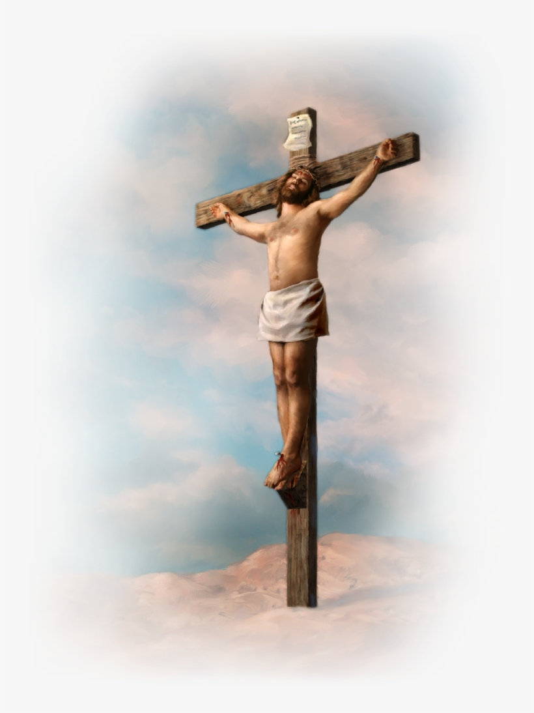
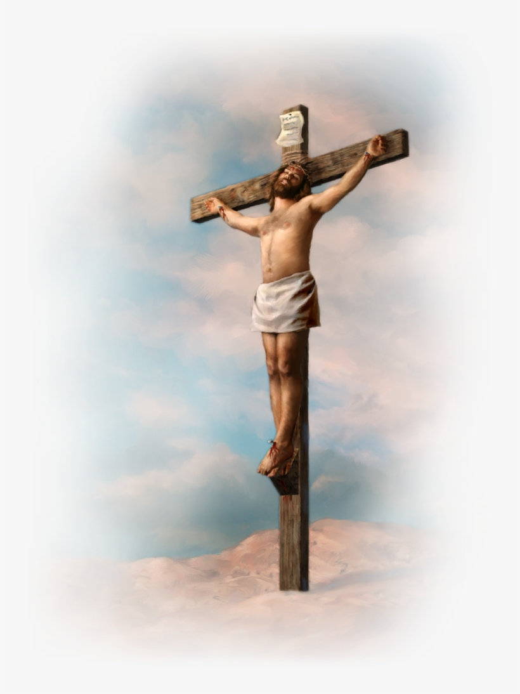

ORAÇÃO EUCARÍSTICA IV
P. Na verdade, ó Pai, é nosso dever
dar-vos graças, é nossa salvação dar- -vos glória: só vós sois o Deus vivo e
verdadeiro que existis antes de todo
o tempo e permaneceis para sem- pre, habitando em luz inacessível.
Mas, porque sois o Deus de bonda- de e a fonte da vida, fizestes todas
as coisas para cobrir de bênçãos as
vossas criaturas e a muitos alegrar
com a vossa luz.
T. Alegrai-nos, ó Pai, com vossa luz!
P. Eis, pois, diante de vós todos os
anjos que vos servem e glorificam
sem cessar, contemplando a vossa
glória. Com eles, também nós, e,
por nossa voz, tudo o que criastes,
celebramos o vosso nome, cantando
(dizendo) a uma só voz:
T. Santo, Santo, Santo...
CP. Nós proclamamos a vossa gran- deza, Pai santo, a sabedoria e o
amor com que fizestes todas as coi- sas: criastes o homem e a mulher à
vossa imagem e lhes confiastes todo
o universo, para que, servindo a vós,
seu Criador, dominassem toda cria- tura. E quando pela desobediência
perderam a vossa amizade, não os
abandonastes ao poder da morte,
mas a todos socorrestes com bon- dade, para que, ao procurar-vos, vos
pudessem encontrar.
T. Socorrei, com bondade, os que
vos buscam!
P. E, ainda mais, oferecestes muitas
vezes aliança aos homens e às mu- lheres e os instruístes pelos profetas
na esperança da salvação. E de tal
modo, Pai santo, amastes o mundo
que, chegada a plenitude dos tem- pos, nos enviastes vosso próprio Fi- lho para ser o nosso
Salvador.
T. Por amor nos enviastes vosso Filho!
P. Verdadeiro homem, concebido do
Espírito Santo e nascido da Virgem
Maria, viveu em tudo a condição
humana, menos o pecado, anunciou
aos pobres a salvação, aos oprimi- dos, a liberdade, aos tristes, a ale- gria. E para realizar o
vosso plano de
amor, entregou-se à morte e, ressus- citando dos mortos, venceu a morte
e renovou a vida.
T. Jesus Cristo deu-nos vida por sua
morte!
P. E, a fim de não mais vivermos para
nós, mas para ele, que por nós mor- reu e ressuscitou, enviou de vós, ó
Pai, o Espírito Santo, como primeiro
dom aos vossos fiéis para santificar
todas as coisas, levando à plenitude
a sua obra.
T. Santificai-nos pelo dom do vosso
Espírito!
CC. Por isso, nós vos pedimos que
o mesmo Espírito Santo santifique
estas oferendas, a fim de que se tor- nem o Corpo e o Sangue de Jesus
Cristo, vosso Filho e Senhor nosso,
para celebrarmos este grande mis- tério que ele nos deixou em sinal da
eterna aliança.
T. Santificai nossa oferenda pelo Es- pírito!
P. Quando, pois, chegou a hora, em
que por vós, ó Pai, ia ser glorificado,
tendo amado os seus que estavam
no mundo, amou-os até o fim. En- quanto ceavam, ele tomou o pão,
deu graças, e o partiu e deu a seus
discípulos, dizendo:
TOMAI, TODOS, E COMEI: ISTO É O
MEU CORPO QUE SERÁ ENTREGUE
POR VÓS.
Do mesmo modo, ele tomou em
suas mãos o cálice com vinho, deu
graças novamente, e o deu a seus
discípulos, dizendo:
TOMAI, TODOS, E BEBEI: ESTE É O
CÁLICE DO MEU SANGUE, O SAN- GUE DA NOVA E ETERNA ALIANÇA,
QUE SERÁ DERRAMADO POR VÓS E
POR TODOS, PARA REMISSÃO DOS
PECADOS. FAZEI ISTO EM MEMÓ- RIA DE MIM.
Eis o mistério da fé!
T. Todas as vezes que comemos
deste pão e bebemos deste cálice,
anunciamos, Senhor, a vossa mor- te, em quanto esperamos a vossa
vinda!
CC. Celebrando agora, ó Pai, a me- mória da nossa redenção, anuncia- mos a morte do Cristo e sua
desci- da entre os mortos, proclamamos a
sua ressurreição e ascensão à vossa
direita, e, esperando a sua vinda
gloriosa, nós vos oferecemos o seu
Corpo e Sangue, sacrifício do vosso
agrado e salvação do mundo inteiro.
T. Recebei, ó Senhor, a nossa oferta!
Olhai, com bondade, o sacrifício que
destes à vossa Igreja e concedei aos
que vamos participar do mesmo pão
e do mesmo cálice que, reunidos
pelo Espírito Santo num só corpo,
nos tornemos em Cristo um sacrifí- cio vivo para o louvor da vossa glória.
T. Fazei de nós um sacrifício de louvor!
1C. E agora, ó Pai, lembrai-vos de
todos pelos quais vos oferecemos
este sacrifício: o vosso servo o Papa
Francisco, com o nosso bispo Odilo,
os bispos do mundo inteiro, os pres- bíteros e todos os ministros, os fiéis,
que, em torno deste altar, vos ofere- cem este sacrifício, o povo que vos
pertence e todos aqueles que vos
procuram de coração sincero.
T. Lembrai-vos, ó Pai, dos vossos filhos!
2C. Lembrai-vos também dos que
morreram na paz do vosso Cristo e de todos os mortos dos quais só vós
conhecestes a fé.
T. A todos saciai com vossa glória!
3C. E a todos nós, vossos filhos e
filhas, concedei, ó Pai de bondade,
que, com a Virgem Maria, mãe de
Deus, com São José, seu esposo,
com os apóstolos e todos os santos,
possamos alcançar a herança eterna
no vosso reino, onde, com todas as
criaturas, libertas da corrupção do
pecado e da morte, vos glorificaremos por Cristo, Senhor nosso.
T. Concedei-nos o convívio dos eleitos!
P. Por ele dais ao mundo todo bem
e toda graça.
CP ou CC. Por Cristo, com Cristo, em
Cristo, a vós, Deus Pai todo-poderoso, na unidade do Espírito Santo,
toda a honra e toda a glória, agora e
para sempre.
T. Amém.
RITO DA COMUNHÃO
CANTO DE COMUNHÃO
Quem é fiel no pouco / é fiel também no muito!
1. Feliz o homem que respeita o Senhor * e que ama com carinho a sua
lei! / Sua descendência será forte sobre a terra, * abençoada a geração
dos homens retos!
2. Haverá glória e riqueza em sua
casa, * e permanece para sempre o
bem que fez. / Ele é correto, generoso e compassivo, * como luz brilha
nas trevas para os justos.
3. Feliz o homem caridoso e prestativo, * que resolve seus negócios
com justiça. / Porque jamais vacilará
o homem reto, * sua lembrança permanece eternamente!
4. Ele reparte com os pobres os seus
bens, * permanece para sempre o
bem que fez. / Ele não teme receber
notícias más: * confiando em Deus,
seu coração está seguro.
5. Demos glória a Deus Pai onipotente / e a seu Filho, Jesus Cristo,
Senhor nosso, † e ao Espírito que habita em nosso peito, * pelos séculos
dos séculos. Amém.
ORAÇÃO APÓS A COMUNHÃO
P. Oremos: (silêncio) Ó Deus,
auxiliai sempre os que alimentais
com o vosso sacramento para que
possamos colher os frutos da redenção na liturgia e na vida. Por Cristo,
nosso Senhor.
T. Amém.